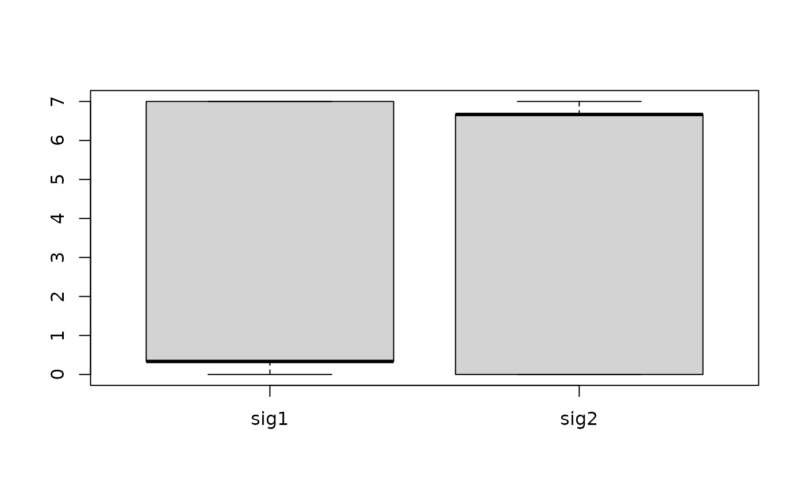

R/sig_fit_bootstrap.R
sig_fit_bootstrap.RdThis can be used to obtain the confidence of signature exposures or search the suboptimal decomposition solution.
sig_fit_bootstrap(
catalog,
sig,
n = 100L,
sig_index = NULL,
sig_db = "legacy",
db_type = c("", "human-exome", "human-genome"),
show_index = TRUE,
method = c("QP", "NNLS", "SA"),
auto_reduce = FALSE,
SA_not_bootstrap = FALSE,
type = c("absolute", "relative"),
rel_threshold = 0,
mode = c("SBS", "DBS", "ID", "copynumber"),
find_suboptimal = FALSE,
suboptimal_ref_error = NULL,
suboptimal_factor = 1.05,
...
)a named numeric vector or a numeric matrix with dimension Nx1. N is the number of component, 1 is the sample.
a Signature object obtained either from sig_extract or sig_auto_extract,
or just a raw signature matrix/data.frame with row representing components (motifs) and
column representing signatures.
the number of bootstrap replicates.
a vector for signature index. "ALL" for all signatures.
default 'legacy', it can be 'legacy' (for COSMIC v2 'SBS'),
'SBS', 'DBS', 'ID' and 'TSB' (for COSMIV v3.1 signatures)
for small scale mutations.
For more specific details, it can also be 'SBS_hg19', 'SBS_hg38',
'SBS_mm9', 'SBS_mm10', 'DBS_hg19', 'DBS_hg38', 'DBS_mm9', 'DBS_mm10' to use
COSMIC v3 reference signatures from Alexandrov, Ludmil B., et al. (2020) (reference #1).
In addition, it can be one of "SBS_Nik_lab_Organ", "RS_Nik_lab_Organ",
"SBS_Nik_lab", "RS_Nik_lab" to refer reference signatures from
Degasperi, Andrea, et al. (2020) (reference #2);
"RS_BRCA560", "RS_USARC" to reference signatures from BRCA560 and USARC cohorts;
"CNS_USARC" (40 categories), "CNS_TCGA" (48 categories) to reference copy number signatures from USARC cohort and TCGA;
"CNS_TCGA176" (176 categories) and "CNS_PCAWG176" (176 categories) to reference copy number signatures from PCAWG and TCGA separately.
UPDATE, the latest version of reference version can be automatically
downloaded and loaded from https://cancer.sanger.ac.uk/signatures/downloads/
when a option with latest_ prefix is specified (e.g. "latest_SBS_GRCh37").
Note: the signature profile for different genome builds are basically same.
And specific database (e.g. 'SBS_mm10') contains less signatures than all COSMIC
signatures (because some signatures are not detected from Alexandrov, Ludmil B., et al. (2020)).
For all available options, check the parameter setting.
only used when sig_db is enabled.
"" for keeping default, "human-exome" for transforming to exome frequency of component,
and "human-genome" for transforming to whole genome frequency of component.
Currently only works for 'SBS'.
if TRUE, show valid indices.
method to solve the minimazation problem. 'NNLS' for non-negative least square; 'QP' for quadratic programming; 'SA' for simulated annealing.
if TRUE, try reducing the input reference signatures to increase
the cosine similarity of reconstructed profile to observed profile.
if TRUE, directly run 'SA' multiple times with original input instead of
bootstrap samples.
'absolute' for signature exposure and 'relative' for signature relative exposure.
numeric vector, a signature with relative exposure
lower than (equal is included, i.e. <=) this value will be set to 0
(both absolute exposure and relative exposure).
In this case, sum of signature contribution may not equal to 1.
signature type for plotting, now supports 'copynumber', 'SBS', 'DBS', 'ID' and 'RS' (genome rearrangement signature).
logical, if TRUE, find suboptimal decomposition with
slightly higher error than the optimal solution by method 'SA'. This is useful
to explore hidden dependencies between signatures. More see reference.
baseline error used for finding suboptimal solution.
if it is NULL, then use 'SA' method to obtain the optimal error.
suboptimal factor to get suboptimal error, default is 1.05,
i.e., suboptimal error is 1.05 times baseline error.
control parameters passing to argument control in GenSA function when use method 'SA'.
a list
Huang X, Wojtowicz D, Przytycka TM. Detecting presence of mutational signatures in cancer with confidence. Bioinformatics. 2018;34(2):330–337. doi:10.1093/bioinformatics/btx604
# This function is designed for processing
# one sample, thus is not very useful in practice
# please check `sig_fit_bootstrap_batch`
# For general purpose -------------------
W <- matrix(c(1, 2, 3, 4, 5, 6), ncol = 2)
colnames(W) <- c("sig1", "sig2")
W <- apply(W, 2, function(x) x / sum(x))
H <- matrix(c(2, 5, 3, 6, 1, 9, 1, 2), ncol = 4)
colnames(H) <- paste0("samp", 1:4)
V <- W %*% H
V
#> samp1 samp2 samp3 samp4
#> [1,] 1.666667 2.1 2.566667 0.7
#> [2,] 2.333333 3.0 3.333333 1.0
#> [3,] 3.000000 3.9 4.100000 1.3
if (requireNamespace("quadprog", quietly = TRUE)) {
H_bootstrap <- sig_fit_bootstrap(V[, 1], W, n = 10, type = "absolute")
## Typically, you have to run many times to get close to the answer
boxplot(t(H_bootstrap$expo))
H[, 1]
## Return P values
## In practice, run times >= 100
## is recommended
report_bootstrap_p_value(H_bootstrap)
## For multiple samples
## Input a list
report_bootstrap_p_value(list(samp1 = H_bootstrap, samp2 = H_bootstrap))
# ## Find suboptimal decomposition
# H_suboptimal <- sig_fit_bootstrap(V[, 1], W,
# n = 10,
# type = "absolute",
# method = "SA",
# find_suboptimal = TRUE
# )
}
#> ℹ [2025-08-22 03:15:08.418279]: Started.
#> ℹ [2025-08-22 03:15:08.420193]: Checking catalog.
#> ✔ [2025-08-22 03:15:08.42184]: Done.
#> ℹ [2025-08-22 03:15:08.423443]: About to start bootstrap.
#> → Bootstrapping 10 times.
#> → Total 10 times, starting no.1.
#> → Total 10 times, starting no.2.
#> → Total 10 times, starting no.3.
#> → Total 10 times, starting no.4.
#> → Total 10 times, starting no.5.
#> → Total 10 times, starting no.6.
#> → Total 10 times, starting no.7.
#> → Total 10 times, starting no.8.
#> → Total 10 times, starting no.9.
#> → Total 10 times, starting no.10.
#> Bootstrap done.
#>
#> ✔ [2025-08-22 03:15:08.732534]: Signature exposures collected.
#> ✔ [2025-08-22 03:15:08.734272]: Errors and similarity collected.
#> ✔ [2025-08-22 03:15:08.735873]: Done.
#> ℹ [2025-08-22 03:15:08.737516]: 0.319 secs elapsed.

#> ℹ [2025-08-22 03:15:08.74233]: Started.
#> ✔ [2025-08-22 03:15:08.744137]: Single sample mode enabled.
#> ✔ [2025-08-22 03:15:08.746801]: Done.
#> ℹ [2025-08-22 03:15:08.748627]: 0.006 secs elapsed.
#> ℹ [2025-08-22 03:15:08.750358]: Started.
#> ✔ [2025-08-22 03:15:08.752023]: Batch mode enabled.
#> ✔ [2025-08-22 03:15:08.755299]: Done.
#> ℹ [2025-08-22 03:15:08.757012]: 0.007 secs elapsed.
#> $samp1
#> threshold_0.01 threshold_0.05 threshold_0.1
#> sig1 0.018043105 0.027706812 0.047025270
#> sig2 0.001655784 0.002473604 0.004135223
#>
#> $samp2
#> threshold_0.01 threshold_0.05 threshold_0.1
#> sig1 0.018043105 0.027706812 0.047025270
#> sig2 0.001655784 0.002473604 0.004135223
#>